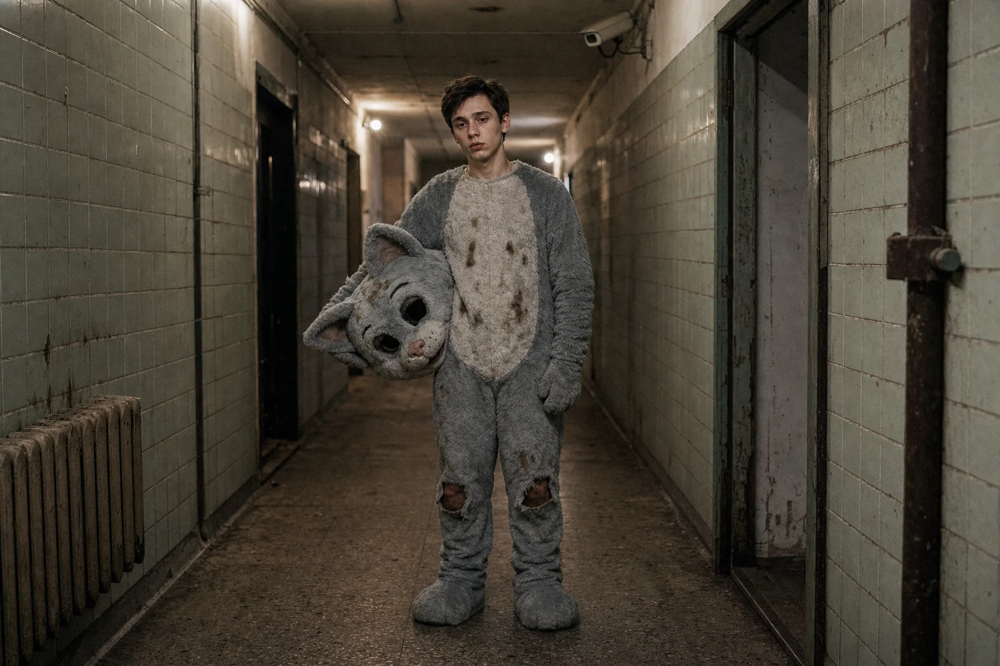
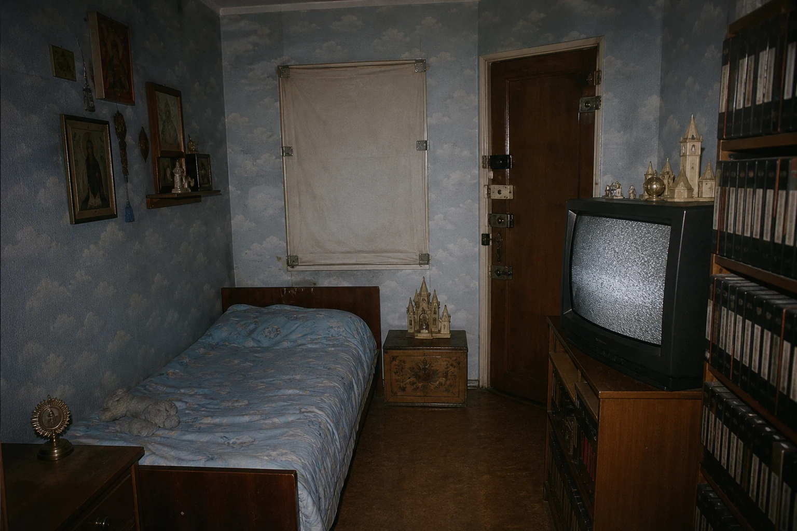
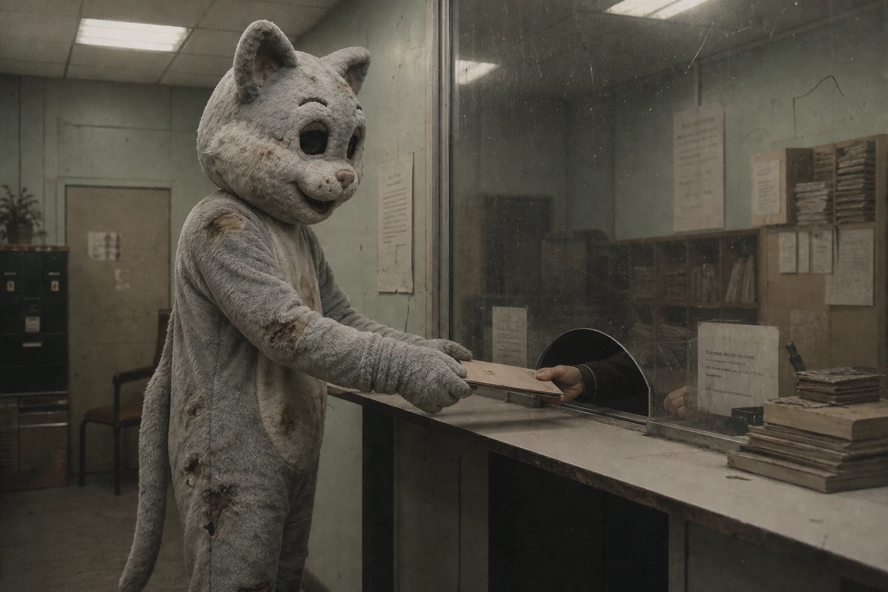
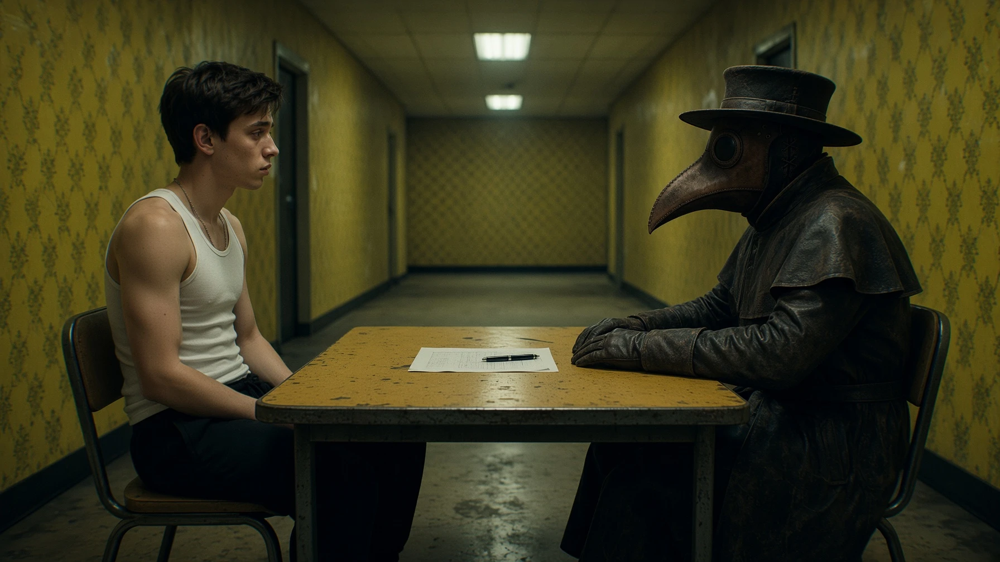
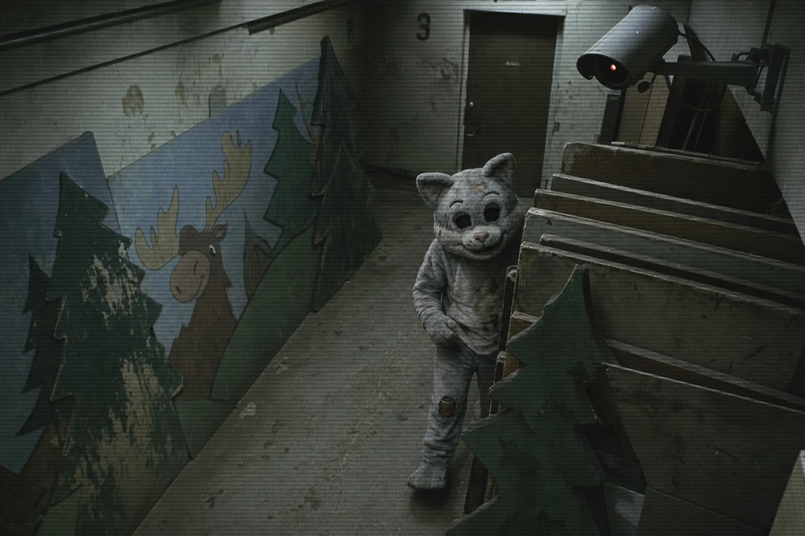
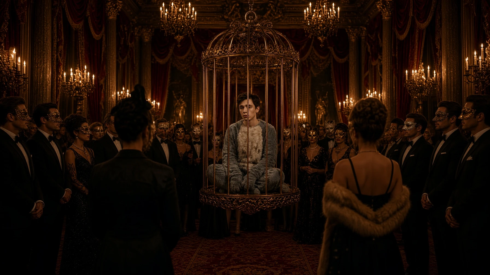
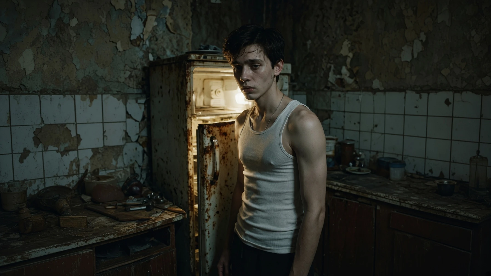
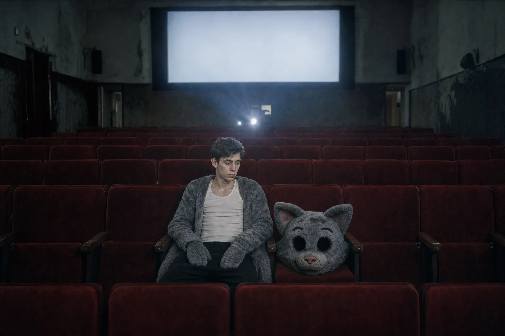
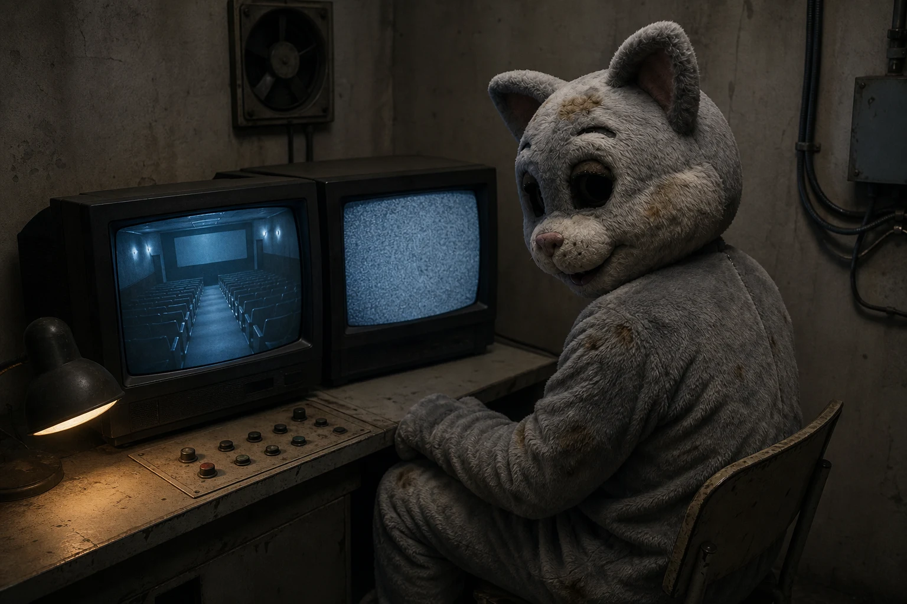

ДОСЬЕ НЕШТАТНОГО ПЕРСОНАЛА
ОБЪЕКТ: «КОТ» / ПАВЕЛ К.
ОБЪЕКТ: «КОТ» / ПАВЕЛ К.
СЛУЖЕБНЫЙ ID: 0274-P
ВОЗРАСТ ПРИ РЕГИСТРАЦИИ: 18 ЛЕТ
КЛАССИФИКАЦИЯ: БЫВШИЙ РЕБЁНОК
ПРЕДЫДУЩЕЕ НАЗНАЧЕНИЕ: АНИМАТОР-КОТ / «ЛОСИНЫЙ ОСТРОВ»
ТЕКУЩЕЕ НАЗНАЧЕНИЕ: ОПЕРАТОР КАБИНОК ОБОЗРЕНИЯ
СТАТУС: ПЕРЕМЕЩЁН

КРАТКОЕ ОПИСАНИЕ
Один из немногих зарегистрированных бывших детей, достигших совершеннолетия без завершённой процедуры Терапии.
Объект обладает устойчивой способностью находить локальные ошибки в распорядке, маршрутах и наблюдении. Те же навыки, которые позволяют ему покидать служебные зоны, признаны производственно ценными.
Не считать сопротивление объекта доказательством независимости.
ДОМАШНЯЯ ИЗОЛЯЦИЯ
Изоляция объекта началась до появления известных детских ловушек. Первичная причина в семейных документах обозначена как «необходимая защита от внешней среды».
После вступления родителей в круг Адептов Вечного Детства формулировка была заменена на «подготовку сохранённого ребёнка».
В родительском помещении обнаружены следы многократной замены дверных замков, коллекция VHS и материалы с упоминанием Сахарного Агнца.

ПРИМЕЧАНИЕ: «САХАРНЫЙ АГНЕЦ»
Родители объекта считали сына мессианским Дитя-Эталоном из собственного прочтения «Книги Сладкого Сна».
Служба архива не располагает данными, подтверждающими истинность пророческого статуса.
СЕМЕЙНАЯ ВЕРА НЕ ЯВЛЯЕТСЯ ЛАБОРАТОРНЫМ ЗАКЛЮЧЕНИЕМ.
ОФИЦИАЛЬНОЕ ВЗРОСЛЕНИЕ
В день достижения совершеннолетия объект самостоятельно прибыл в паспортный стол в полном костюме Кота.
Маскировка позволила пройти контроль, применявшийся к несовершеннолетним. Объект предъявил свидетельство о рождении и потребовал зарегистрировать изменение статуса.
Первая фраза, внесённая в государственный протокол:
«Я уже не ребёнок».

После признания взрослым объект был направлен к столу оформления первого трудового контракта.
Предложенная должность: Аниматор-Кот.
Промежуток между освобождением от статуса ребёнка и регистрацией в качестве персонала составил менее одного рабочего дня.

КОСТЮМ И СЛУЖЕБНАЯ ПРИГОДНОСТЬ
Объект отрицает принадлежность к Аниматорам и называет костюм «служебным пропуском с хвостом».
Наблюдение подтверждает, что Павел использует привычку персонала не снимать головы маскотов во время перемещений и отпуска.
Костюм обеспечивает доступ, анонимность и возможность выглядеть менее опасным, чем объект является фактически.

Комментарий младшего наблюдателя:
«Он не прячется от камер. Он заранее знает, какое место камера считает пустым».
АУКЦИОННЫЙ ИНЦИДЕНТ
В рамках закрытой передачи персонала объект был помещён в демонстрационную клетку и приобретён женщиной в фарфоровой маске.
По версии объекта, он сам выбрал покупательницу, добровольно сел в клетку и заранее рассчитал впечатление от «грустных глаз Кота».
Запись не позволяет установить, заметила ли покупательница предложенную ей роль спасительницы или назначила её себе самостоятельно.

Объект находился за пределами комплекса несколько дней.
На просьбу описать данный период отвечает:
«Про остальное не хочу говорить».
Дополнительное давление не рекомендовано. Недосказанность поддерживает сотрудничество лучше допроса.
ВОЗВРАЩЕНИЕ
После успешного выхода объект добровольно вернулся к служебному окну выдачи продукта «Детский Жир».
Факт возвращения объект зависимостью не признаёт. Использует формулировки «техническая остановка», «дозаправка» и «надо было кое-что забрать».
Состояние объекта совместимо с синдромом отмены. Конкретные симптомы и продолжительность эпизода не установлены.

ПСИХОЛОГИЧЕСКИЙ ПРОФИЛЬ
- быстро считывает потребности собеседника;
- вызывает жалость без прямой просьбы о помощи;
- переописывает поражение как предусмотренную часть плана;
- презирает зависимых сотрудников, не относя себя к ним;
- при опасных вопросах использует шутку, флирт или внезапную искренность;
- воспринимает события как фильм, в котором обязан оставаться главным героем.
Заключение психолога смены:
«Объект редко лжёт в первой фразе. Он просто заранее подготавливает вторую».
РАБОТА С ВХОДЯЩИМ КОНТИНГЕНТОМ
Внешность объекта вызывает доверие у несовершеннолетних и взрослых сотрудников с выраженным спасательным поведением.
Зафиксированы случаи передачи листовок ТЮЗа и рекомендаций следовать в сторону запаха сладкой ваты.
Описанные действия выполнялись без видимого принуждения и сопровождались спокойным дружелюбным тоном.
Помощь объекта не рекомендуется считать спасением без проверки конечной точки маршрута.
КИНОТЕАТР «ИЛЛЮЗИОН»
Любовь объекта к кино сформировалась в домашней изоляции и остаётся второй устойчивой причиной возвращения.
Даже при успешном побеге объект регулярно появляется в «Иллюзионе». Это делает его маршрут предсказуемым, однако Павел называет посещения частью трудового договора.
Подтверждение существования данного пункта в контракте отсутствует.

Во время сеансов объект периодически смотрит не на экран, а на соседнее место.
Служба наблюдения не установила, ждёт ли он свидетеля, сообщника или следующего человека, который согласится считать его побег настоящим.
ТЕКУЩЕЕ НАЗНАЧЕНИЕ
После обращения к Главврачу объект был переведён в кабинку обозрения.
Назначение использует знание камер, привычку к скрытому наблюдению и способность быстро интерпретировать поведение персонала.
Точная конфигурация органов управления и список наблюдаемых помещений из гостевой копии удалены.

Внутренняя формулировка назначения:
«Сотрудник, умеющий исчезать из изображения, размещён по другую сторону изображения».
ОБНОВЛЁННОЕ ЗАКЛЮЧЕНИЕ
Павел К. не является лояльным сотрудником.
Павел К. не является независимым беглецом.
Объект способен покинуть помещение, обмануть наблюдение и использовать доверие другого человека как ключ.
После выхода объект возвращается к продукту, экрану или следующей возможности доказать, что возвращение было его решением.
Не установлено, допускает ли Администрация его побеги.
Установлено следующее:
ОБЪЕКТ ПОКИДАЕТ ПОМЕЩЕНИЯ. ОБЪЕКТ НЕ ПОКИДАЕТ МАРШРУТ.